Standalone Novels

The Stars Look Like Home
From beloved #1 New York Times bestselling author TJ Klune comes a heartwarming story about a good boy in search of a great life. The Stars Look Like Home is a funny and moving adventure about finding one’s place in the universe from the perspective of a dog.
A promise: The dog does not die in this.
Coming 1.12.27

Murmuration
In 1954, Mike lives an apparently perfect life in the idyllic town of Amorea, where he works at a bookstore and begins a promising romance with Sean. But beneath the town’s charm lie unsettling mysteries: forgotten residents, no children, and secrets surrounding those who leave. As Mike’s sense of identity unravels and dark memories resurface, he must uncover the truth about Amorea to protect Sean from the looming danger.

We Burned So Bright
In this emotional standalone novel, longtime husbands Don and Rodney embark on a final cross-country journey as Earth faces destruction from an approaching black hole. With only a month left, they travel from Maine to Washington State to settle unfinished business while reflecting on forty years of love, loss, and shared life. Along the way, they encounter humanity in its final moments—fear, denial, joy, and connection—forcing them to confront whether a life well-lived is enough when everything is about to end.

The Bones Beneath my Skin
After losing everything, Nate Cartwright retreats to his family’s remote cabin in Oregon, only to discover it occupied by a mysterious man named Alex and an extraordinary young girl called Artemis Darth Vader. As Nate becomes entangled in their lives, he learns Artemis possesses dangerous secrets that have drawn the attention of cultists and government forces alike. Faced with powerful enemies and his own grief, Nate must choose between remaining trapped in his past or risking everything to protect a child who could change the future.

In the Lives of Puppets
In a hidden treehouse, human Victor Lawson lives with his unconventional robotic family, including inventor android Giovanni and other quirky machines. But when Victor repairs a mysterious android named Hap, dangerous secrets from Giovanni’s violent past resurface, putting their peaceful life at risk. As Giovanni is captured, Victor and his found family embark on a perilous journey to rescue him, forcing Victor to confront love, loyalty, and whether true connection can survive betrayal.

Under the Whispering Door
After his death, Wallace Price is taken not to the afterlife, but to a mysterious tea shop run by Hugo, a ferryman who helps souls move on. Reluctant to leave behind the life he never truly appreciated, Wallace begins an unexpected journey of self-discovery, love, and redemption. With only one week to prepare for crossing over, Wallace must finally learn what it means to truly live.
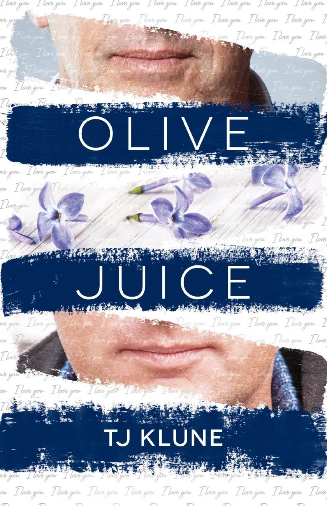
Olive Juice
It begins with a message that David cannot ignore:
I want to see you.
He agrees, and on a cold winter’s night, David and Phillip will come together to sift through the wreckage of the memory of a life no longer lived.
David is burdened, carrying with him the heavy guilt of the past six years upon his shoulders.
Phillip offers redemption.
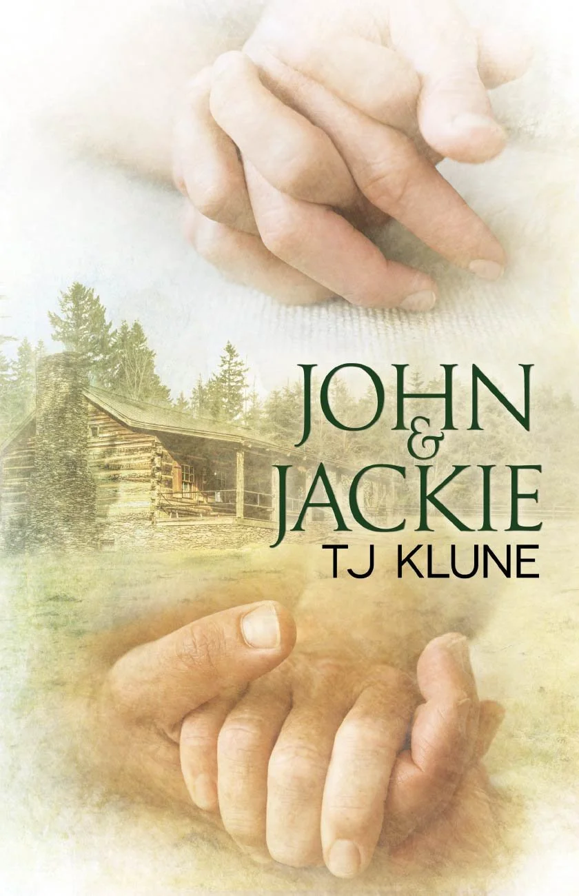
John & Jackie
After seventy-one years together, John and Jackie reflect on the defining moments of their lifelong love—from childhood friendship and first romance to hardship, pain, and resilience. Over the course of one final afternoon, they revisit the experiences that shaped their bond as John prepares to give Jackie a profound final gift, proving that their devotion has remained unshakable through every stage of life.
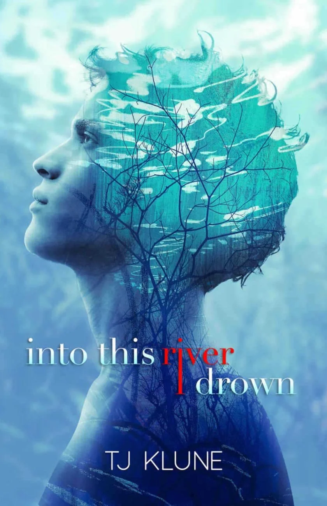
Into This River I Drown
Still grieving his father’s mysterious death, Benji Green struggles to keep his family’s convenience store running in the strange town of Roseland, Oregon. As unsettling visions and supernatural events intensify, Benji discovers that his father’s death may be tied to far greater mysteries involving hidden truths, dangerous forces, and a mysterious winged man named Calliel. Drawn into a world beyond his understanding, Benji must confront grief, love, and the extraordinary secrets surrounding his life.
Cerulean Chronicles

The House in the Cerulean Sea
Linus Baker, a strict caseworker overseeing magical children, is sent to investigate a remote orphanage housing six extraordinary and potentially dangerous children. There, he meets the enigmatic caretaker Arthur Parnassus and discovers a world that challenges everything he believes about duty, fear, and family. As Linus grows closer to the children and Arthur, he must decide whether to follow the rules or protect the found family that changes his life forever.

Somewhere beyond the sea
Arthur Parnassus has built a loving home for magical children on Marsyas Island, determined to give them the safety and family he never had. But when his troubled past resurfaces and he is called to defend himself publicly, Arthur must fight not only for his family’s future but for the rights of all magical people. As new challenges and a powerful child test their bonds, Arthur and his loved ones must prove that love, resilience, and found family can withstand even the darkest truths.
Greencreek Series

Wolfsong
Abandoned and underestimated for much of his life, Ox’s world changes when he meets Joe, a mysterious boy from a remarkable family with extraordinary secrets. As Ox becomes entwined with a powerful world of wolves, loyalty, and destiny, deep bonds and devastating loss shape his journey into adulthood. When Joe returns after years apart, Ox must confront the love, pain, and connection that have always bound them together.

Ravensong
After years of betrayal and distance from the Bennett wolf pack, Gordo Livingstone is reluctantly drawn back into their world—and back to Mark Bennett, whose bond with him remains impossible to ignore. As new dangers emerge from within the pack itself, Gordo must confront painful wounds, powerful magic, and the fragile ties of love and loyalty. With darkness rising once more, he faces the possibility that even the strongest bonds may not survive.
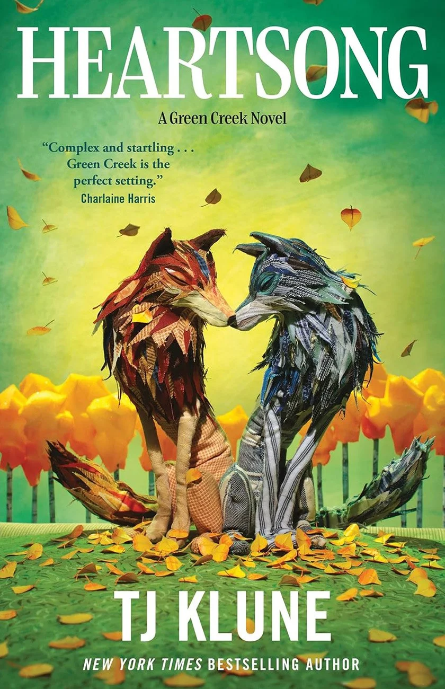
Heartsong
After years of searching for belonging, Robbie Fontaine finally finds purpose within the powerful wolf stronghold of Caswell, Maine. But when secrets, political unrest, and forbidden connections challenge everything he believes, Robbie is forced to question his loyalties—especially when his fate becomes entwined with Kelly Bennett, a wolf accused of betrayal. As hidden truths emerge, Robbie must navigate love, identity, and the devastating consequences of uncovering the truth.
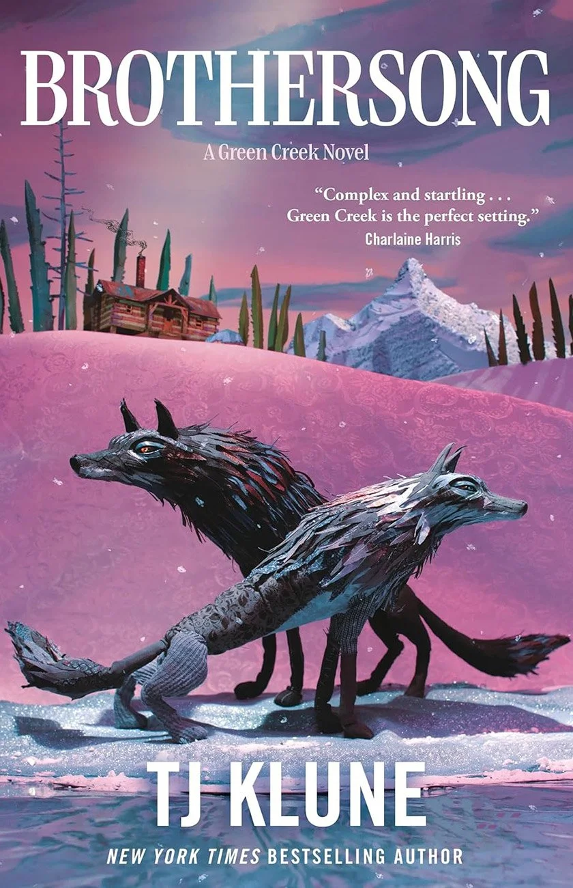
Brothersong
After devastating revelations in Caswell, Carter Bennett sets out alone in search of Gavin, a feral wolf tied to long-buried secrets about his family and pack. As isolation threatens Carter’s sanity, his journey uncovers hidden truths that could reshape the future of all wolves. Confronting the legacy of past betrayals, Carter must face the heavy burden of his family’s sins and decide what kind of future he will help create.
The Extraordinaries
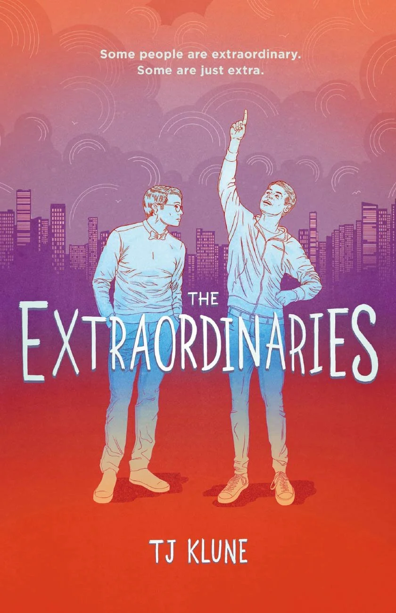
The Extraordinaries
Nick Bell may not have superpowers, but his passion for superheroes, fanfiction, and his larger-than-life imagination make him determined to become extraordinary. After meeting his hero and crush, Shadow Star, Nick embarks on a chaotic journey of self-discovery, friendship, and first love—alongside his best friend Seth. This queer coming-of-age adventure blends humor, heart, and heroics as Nick learns what it truly means to be extraordinary.
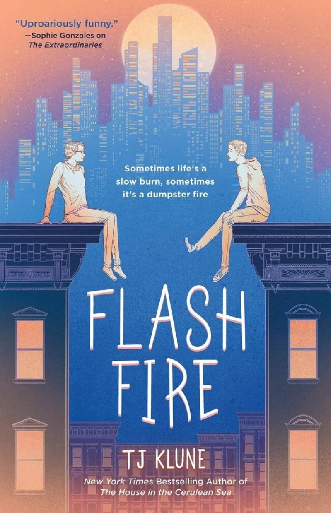
Flash Fire
Nick is finally dating the superhero of his dreams, but life with a real-life hero proves more complicated than fantasy. As powerful new heroes and villains emerge in Nova City, Nick and his friends must uncover hidden truths, navigate dangerous secrets, and question everything they thought they knew about justice and family. Amid romance, chaos, and humor, Nick continues his journey to understand what being truly extraordinary means.
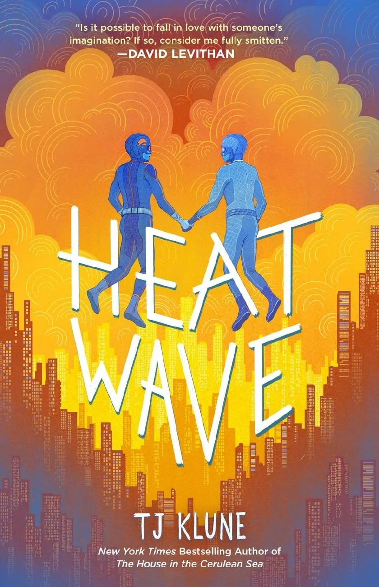
Heat Wave
In the thrilling conclusion to the Extraordinaries trilogy, Nick and his friends face their biggest challenges yet as unexpected heroes, dangerous revelations, and personal upheavals shake Nova City. With family secrets, friendship, love, and heroism all on the line, Nick must fully embrace who he is and what it truly means to be extraordinary in order to protect the people he loves.
Tales from verania SERIES
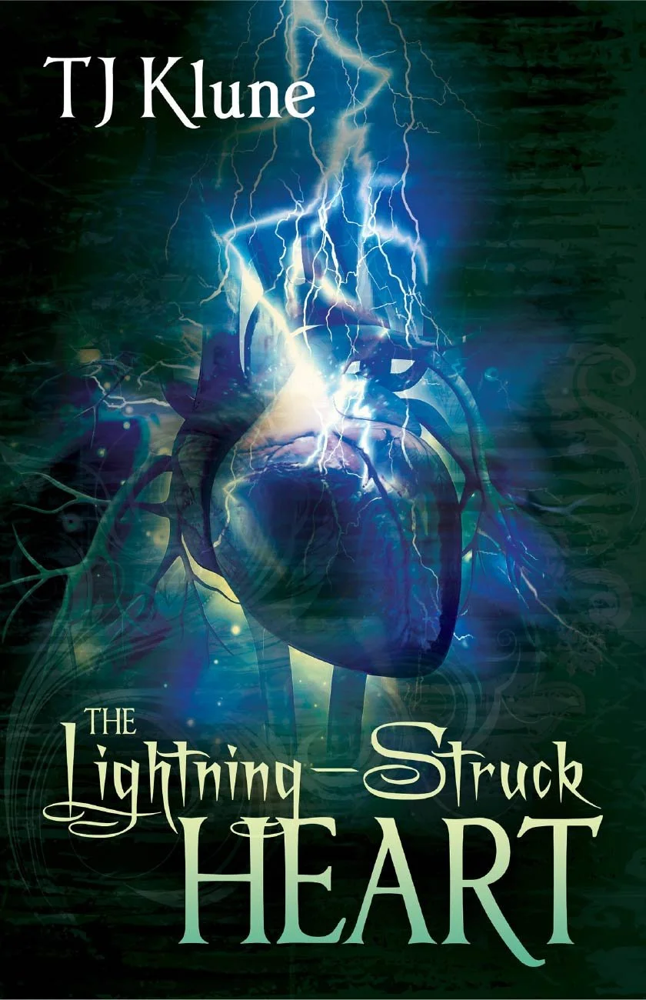
The Lightning Struck Heart
Sam Haversford’s life changes forever when his accidental magic leads him from the slums to becoming the apprentice of the king’s wizard. Alongside an unforgettable found family—including a gay unicorn, a half-giant, and a lovable dragon—Sam embarks on a chaotic magical adventure filled with danger, humor, and heartbreak. As he struggles with immense power and unrequited love for the noble Ryan Foxheart, Sam discovers that destiny, love, and heroism may hold far more for him than he ever imagined.
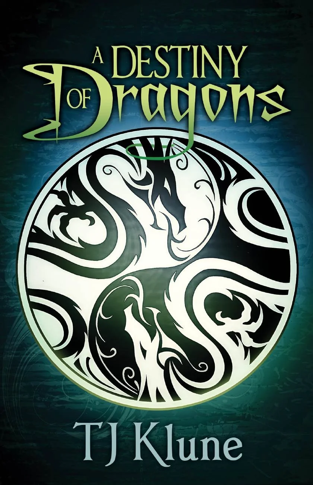
A Destiny of Dragons
A year after finding his happily ever after with Ryan Foxheart, Sam of Wilds is once again thrown into chaos when a dark prophecy reveals a looming threat that could destroy the world. Tasked with gathering the five dragons of Verania, Sam must confront destiny, powerful new challenges, and unsettling revelations about love and fate—including the arrival of someone who may threaten everything Sam thought he knew about his future.
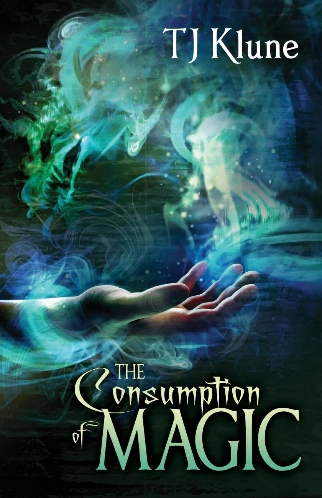
The Consumption of Magic
After surviving a devastating battle with the dark wizard Myrin, Sam of Wilds discovers his scars carry dangerous significance tied to Myrin’s true plans. Joined by his loyal found family, Sam embarks on a perilous quest to unite the remaining dragons and uncover long-buried secrets that could change Verania forever. As destiny closes in, Sam must face his greatest reckoning yet to protect the world he loves.
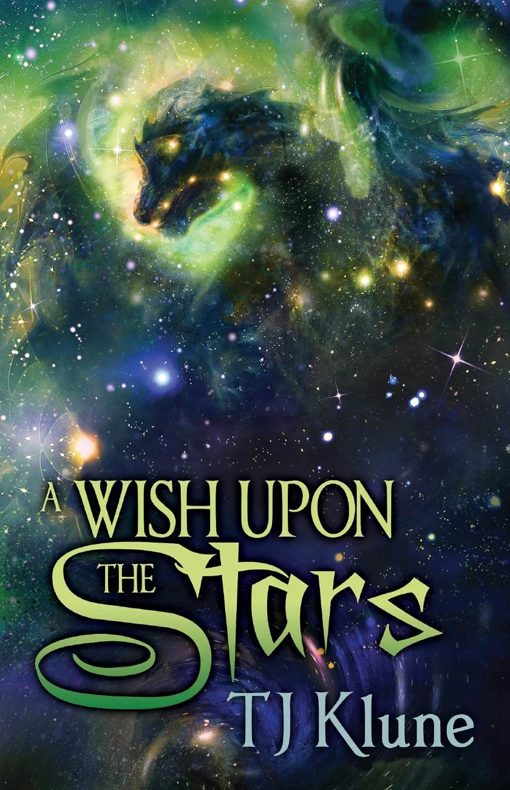
A Wish Upon the Stars
After disappearing into the Dark Woods, Sam of Wilds returns to find Verania conquered, his king imprisoned, and the dark wizard Myrin ruling from the throne. As a resistance rises in Sam’s name, led by the friends he left behind, Sam must confront the consequences of his past choices and reclaim both his power and his kingdom. In this final battle for freedom, love, and redemption, Sam faces his greatest challenge yet.
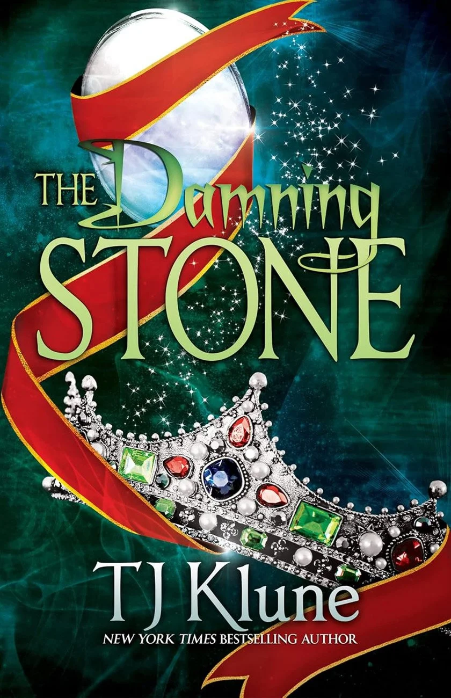
The Damning Stone
A year after Verania’s salvation, Prince Justin faces a new battle when an arranged political marriage threatens his future. Determined to resist both royal duty and an infuriatingly persistent foreign king, Justin navigates court intrigue, personal growth, and unexpected vulnerability. As friendships shift and new challenges arise, Justin must decide whether to keep his heart guarded—or risk everything for love.
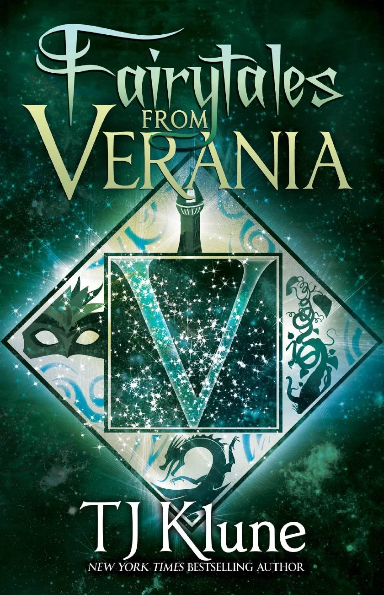
Fairytales from Verania
This enchanting collection returns readers to Verania through a series of whimsical, humorous, and heartfelt tales featuring beloved characters in imaginative fairy-tale-inspired adventures. From Gary’s dramatic quest for rescue to magical mischief, romance, and the poignant legend of David and his dragon, these stories blend comedy, fantasy, and emotional depth while expanding the rich world of Verania.
SEAFARE SERIES
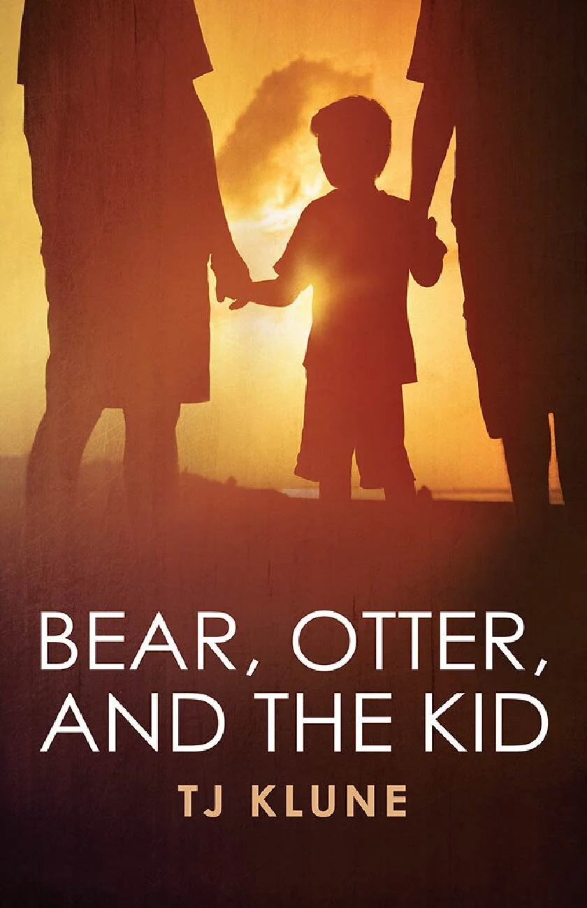
Bear Otter and the Kid
After being abandoned by their mother, Bear McKenna dedicates his life to raising his younger brother, Tyson, putting his own needs aside. But when Otter—his best friend’s older brother and a constant presence from his past—returns, Bear is forced to confront deep emotions, new possibilities, and the chance for a life beyond survival. As love and family intertwine, Bear must decide whether he can open himself to something more.
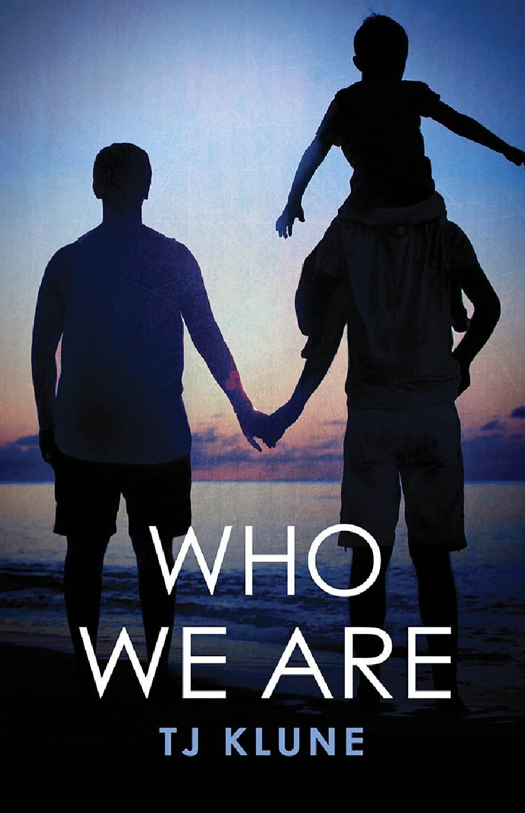
Who We Are
As Bear, Otter, and Tyson begin building a life together, they quickly learn that love doesn’t erase life’s challenges. Facing custody battles, family conflicts, painful truths from the past, and the ongoing struggle to heal, Bear must redefine what family truly means. Through heartbreak, humor, and resilience, they discover that family is shaped not by blood, but by the people who choose to stay.
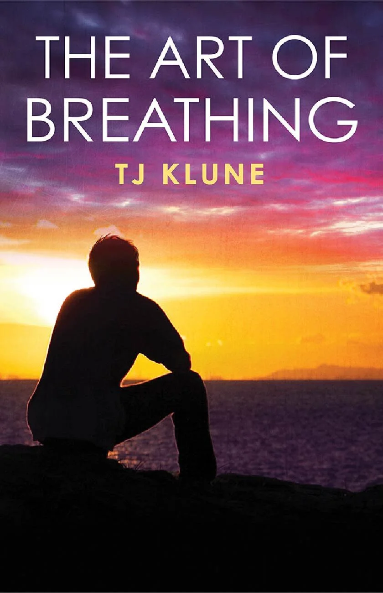
The Art of Breathing
After years of struggle, addiction, and disappointment, Tyson returns home to Seafare seeking healing and a fresh start. Reunited with family and confronted by his first love, Dominic, Tyson must face unresolved pain, buried secrets, and the lingering wounds of his past. As he rebuilds his life, Tyson embarks on a deeply personal journey toward recovery, self-acceptance, and hope for the future.
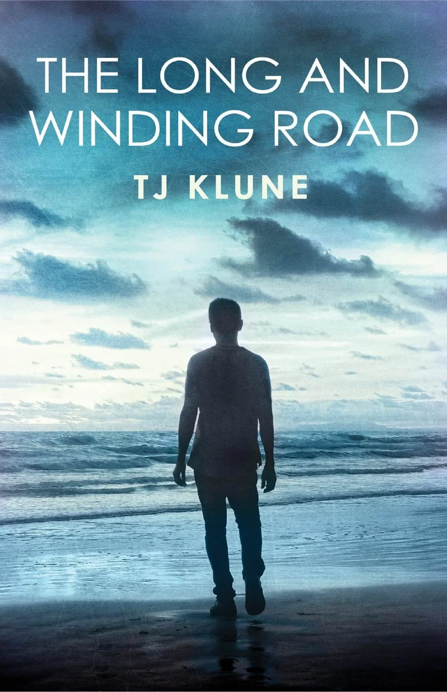
The Long and Winding Road
In the powerful conclusion to Bear, Otter, and the Kid’s story, Bear and Otter face life-changing challenges that test the strength of their love, family, and resilience. As unexpected new responsibilities, emotional revelations, and long-awaited homecomings reshape their world, they must embrace the future they’ve fought for while honoring the bonds that made them whole.
AT FIRST SIGHT SERIES
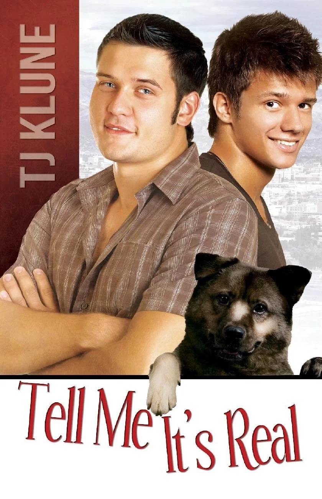
Tell Me Its Real
Paul Auster is cynical, insecure, and stuck in a life he never imagined, until the relentlessly charming Vince Taylor crashes into his world. Despite Paul’s disbelief that someone like Vince could truly want him, an unexpected romance begins to challenge his fears and self-doubt. As love deepens through humor, heartbreak, and personal growth, Paul must learn to accept both Vince’s devotion and his own worth.
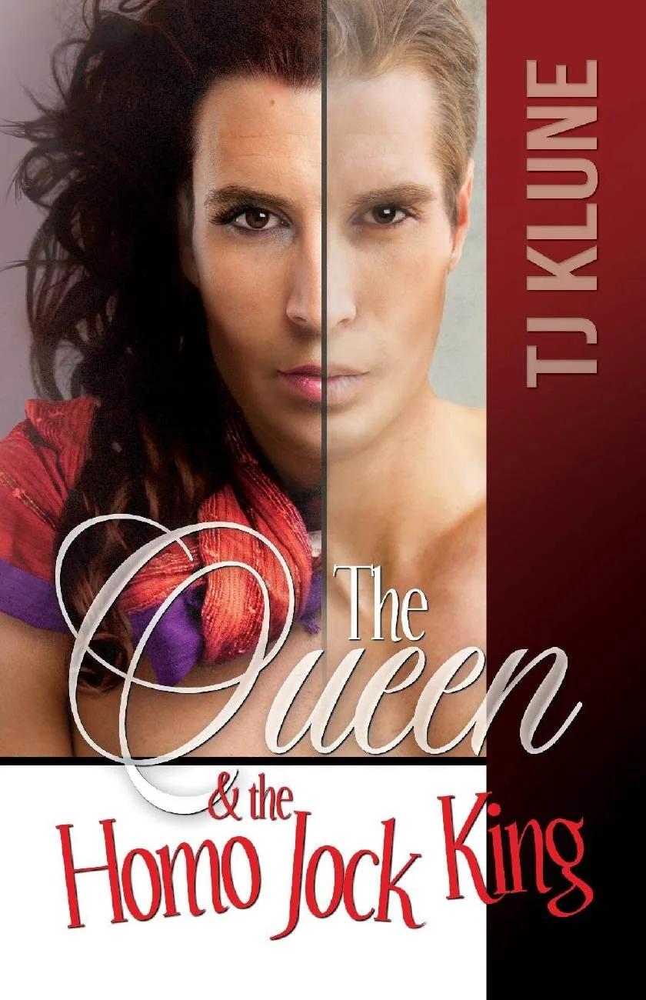
The Queen and The Homo Jock King
Sanford Stewart, better known as drag queen Helena Handbasket, has no patience for the infuriatingly chaotic Darren Mayne. But when the future of his beloved club depends on winning over Darren—and through him, the mayor—Sandy reluctantly agrees to a risky plan of seduction. As sparks fly and old assumptions unravel, Sandy discovers that love, vulnerability, and trust may be far more complicated than he ever expected.
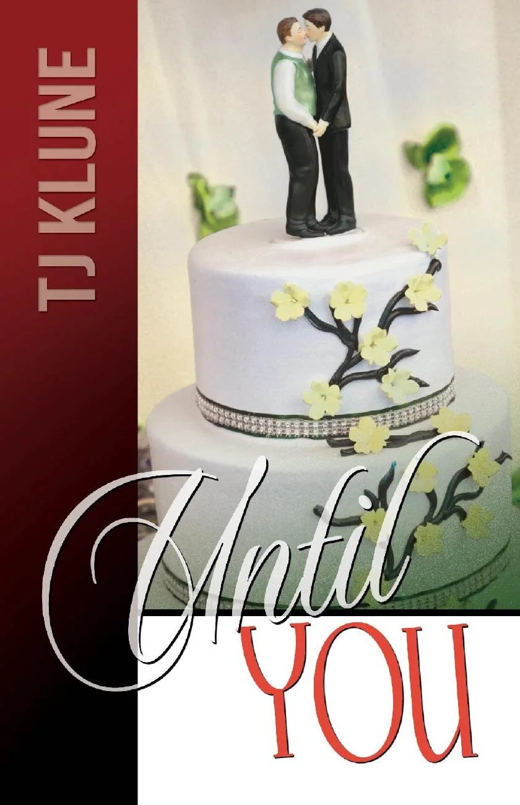
Until You
Paul Auster and Vince Taylor just want to have a simple wedding.
Really, is that too much to ask?
As the big day approaches, they struggle to keep everything from spiraling out of control.
From meddling friends and intrusive family, to a certain drag queen's idea as to what constitutes a normal bachelor party, Paul and Vince have their work cut out for them.
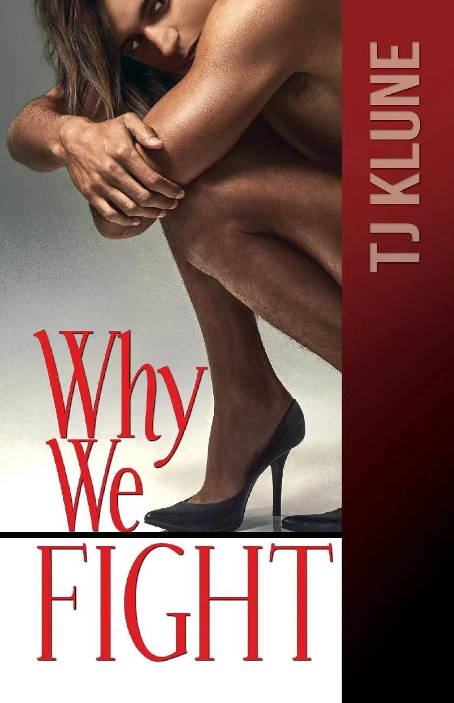
Why We Fight
Corey Ellis is focused on surviving his final summer before graduation—not falling for his former professor, Jeremy Olsen. But when Jeremy becomes his new boss at an LGBTQ+ youth center, Corey must navigate growing attraction, personal identity, and the chaos of unexpected romance. With the help—and interference—of friends, Corey embarks on a journey of self-discovery, courage, and embracing who he truly is.
How to be series
How to be a Normal Person
Gustavo Tiberius has always embraced his wonderfully unconventional life, preferring solitude and routine over change. But when Casey, an endearing and persistent new presence, enters his world, Gus begins to question whether he might want more than simply being left alone. As love pushes him beyond his comfort zone, Gus embarks on a heartfelt and humorous journey of self-acceptance, vulnerability, and discovering that normal was never the goal.
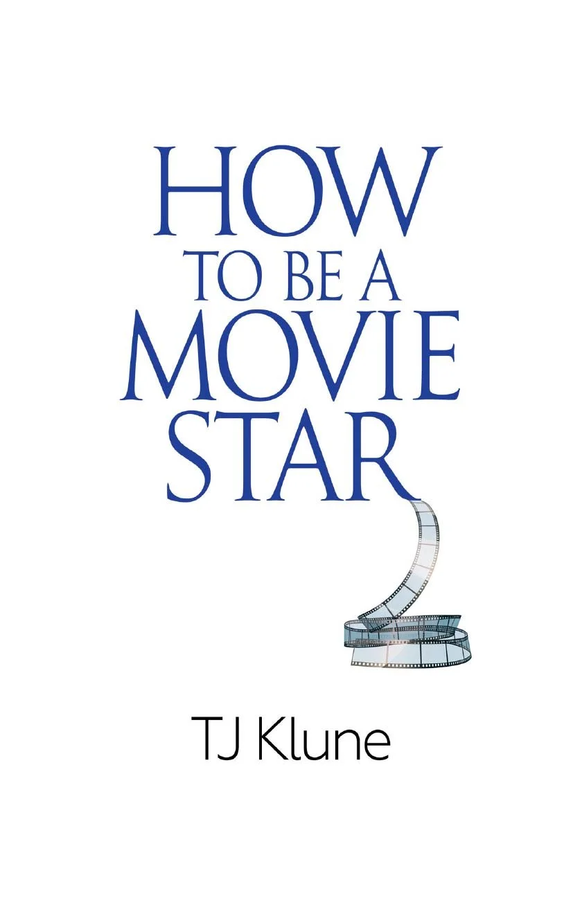
How to be a Movie Star
Aspiring actor Josiah Erickson is determined to make it in Hollywood, even if his career so far has been less than glamorous. When an unexpected opportunity arises through the mysterious writer-director Q-Bert, Josy embarks on a journey that could change both his professional and personal life. As ambition, friendship, and romance intertwine, Josy discovers that the dreams worth chasing may be bigger—and more heartfelt—than fame alone.
THE IMMEMORIAL YEAR DUO
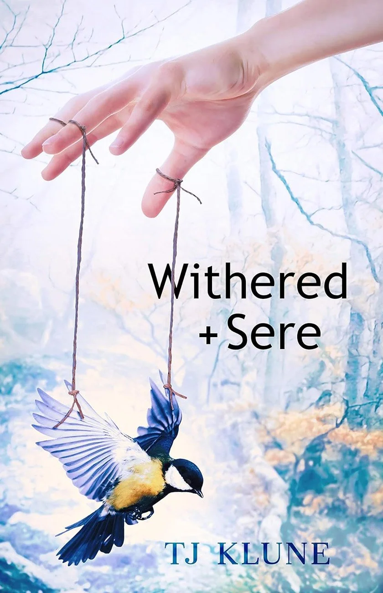
Withered + Sere
A century after humanity destroyed itself, Cavalo survives alone in the ruins of a post-apocalyptic world, haunted by his past and accompanied only by a dog and an unstable robot. When a dangerous encounter with a silent captive forces him beyond isolation, Cavalo must confront old traumas, brutal truths, and the possibility of redemption. In a shattered world defined by violence and loss, he discovers that hope may still endure among the ruins.
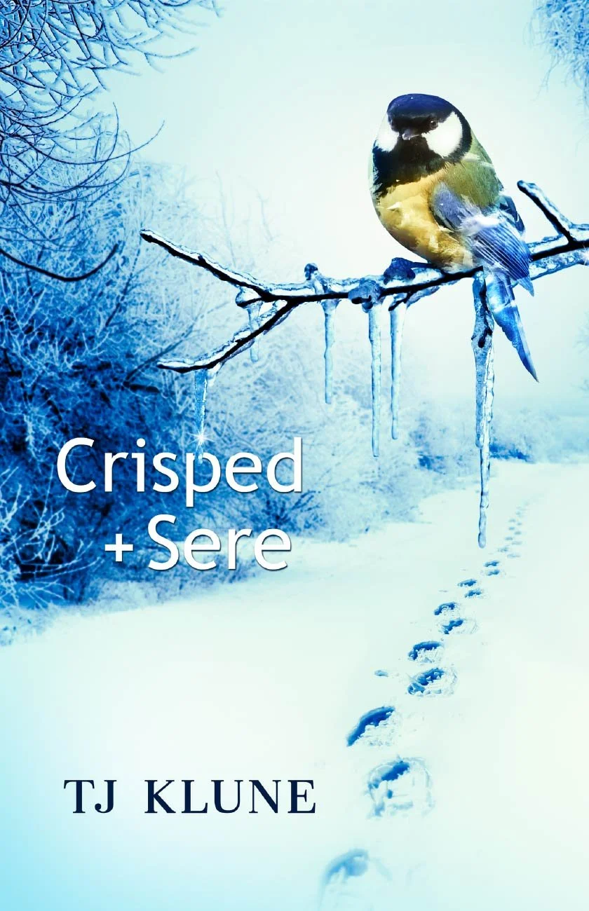
Crisped + Sere
With only twenty-one days to save Cottonwood from destruction, Cavalo is thrust into a desperate battle against brutal enemies while protecting Lucas, a mysterious man whose hidden secrets could reshape the future. As war approaches, Cavalo must confront his fractured sanity, growing emotional ties, and the possibility that Lucas may hold the key to something far greater than survival in their broken world.